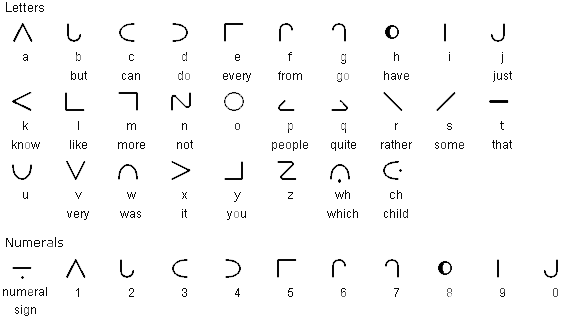
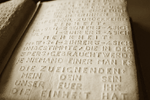
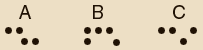

Alfabet Williama Moona
Dr William Moon (1818-1894) jest twórcą alfabetu, który Składa się z trzech rodzajów znaków. Jeden z nich zawiera znaki, których kształt zbliżony jest do wielkich liter alfabetu łacińskiego. Inny jest modyfikacją polegającą na opuszczeniu niektórych części liter. Trzeci rodzaj znaków stanowią umowne linie i kropki. Podstawą i punktem wyjścia systemu jest osiem liter alfabetu łacińskiego, które przez zmianę pozycji np. odwrócenie o 90 lub 180 stopni, dają inne litery. Cechą charakterystyczną tego pisma jest zmienny kierunek czytania, o czym informuje wypukły łuk usytuowany na końcu wiersza. Alfabet Moona jest alternatywą w szybkim opanowaniu czytania dotykowego przez dorosłe osoby ociemniałe.
 http://www.omniglot.com/writing/moon.htmPismo Wilhelma Kleina
W koncepcji pisma propagowanego przez W. Kleina (1809 r.) wykorzystana została linia punktowa. Oznacza to, że litery łacińskie drukowane były przy pomocy czcionek szpilkowych. Choć linia punktowa była łatwiejsza do percepcji dotykowej niż wypukła linia, to wolne tempo czytania i zapisu przez osoby niewidome, a przede wszystkim mała dostępność do drukarek szpilkowych, przyczyniły się do tego, że pismo W. Kleina nie zyskało popularności w środowisku osób z dysfunkcją wzroku.
New York Point
J. D. Russ i jego następca W. B. Wait dokonali zmiany w szcześciopunkcie Braille'a mającej przynieść ponad dwadzieścia procent oszczędności miejsca i polegającej na ustawieniu sześciopunktu w pozycji poziomej. System ten nazywany New York Point nie nadawał się do bardziej skomplikowanej notacji i nie został przyjęty, ani rozpowszechniony na szerszą skalę.
